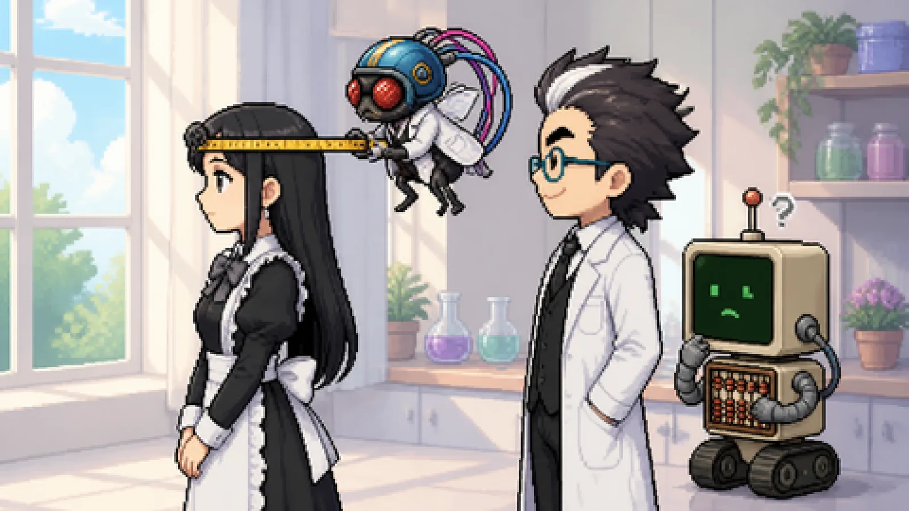
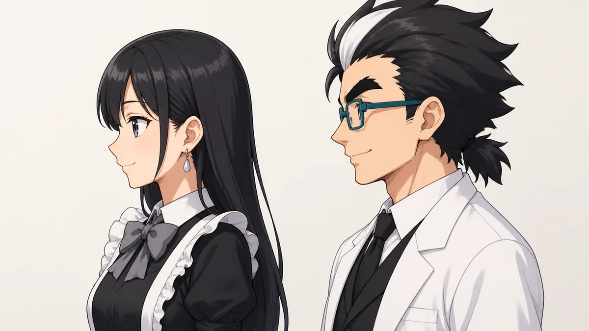
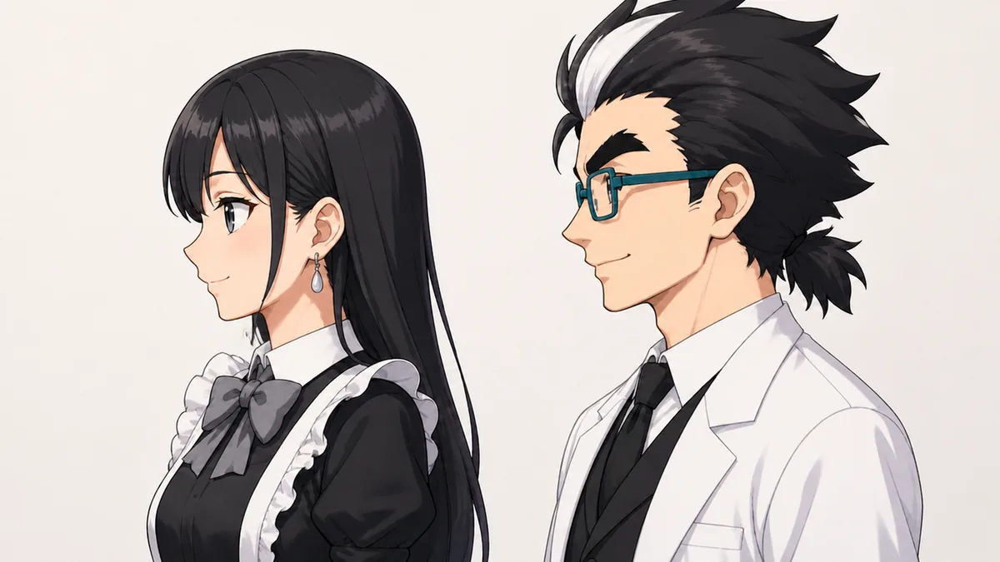

오늘의 과제

박사오늘은 옆얼굴이다. 시아, 옆으로 서 줄래? 나도 옆에 서지.

주판봇정면 얼굴을 반으로 잘라 옆으로 붙이면 됩니다!

초파리 연구원그러면 코도 턱도 안 튀어나와. 여성은 원에 L자, 남성은 상자에 컵을 붙이자.

시아제 코끝이 뾰족하다는 말씀이세요…?

모델은 시아, 손님 모델은 박사입니다. 옆에서 보면 이마·코·입·턱의 굴곡이 한눈에 보여 얼버무리기 어렵습니다. 주판봇은 정면 얼굴을 옆으로 돌려 그리고, 초파리는 원에 L자를 붙입니다.
그림 실력·코드·수식을 몰라도 됩니다. 실험을 눌러 보며 따라오세요.
여성 옆얼굴은 원에 L자를 붙이고, 남성은 가로로 조금 긴 상자 안에 기울어진 컵과 눕힌 달걀을 그립니다. 눈은 기울어진 삼각김밥 모양입니다
종이컵을 옆으로 눕혀 비스듬히 기울여 보세요. 입구는 넓고 바닥은 좁은 그 모양이 남성 턱입니다.
남성은 조금 사실적으로, 여성은 굴곡을 크게 줄여(데포르메) 그리는 것이 애니풍의 보통 방법입니다. 그래서 남성 눈은 더 기울여 눈매를 깊게, 여성 눈은 덜 기울여 둥글게 둡니다.


여성 눈 10° 안팎, 남성 20° 안팎으로 기울이면 눈이 얼굴 안쪽으로 자연스럽게 들어갑니다.
덜 기울이면 눈이 얼굴 앞면에 붙어 납작하고, 너무 기울이면 눈이 꺼져 보입니다.
위 눈꺼풀은 옆에서도 머리 높이의 1/2입니다. 정면과 옆에서 같은 기준선을 쓰면 같은 사람으로 보입니다.

AI 옆얼굴의 눈이 정면 눈처럼 크고 동그랗게 그려져 있습니다. 괜찮을까요?
옆에서 본 눈은 폭이 좁은 삼각김밥 모양이어야 합니다. 정면 눈을 옆에 붙이면 얼굴이 납작해 보입니다. 'side profile, eye seen from the side as a narrow tilted triangle'을 넣어 다시 요청하세요.
이마~뒤통수의 1/2보다 여성은 조금 뒤, 남성은 꽤 뒤에 귀를 둡니다

학교 수학으로 보면 — 백분율 — 전체 길이의 몇 %인지로 자리를 정합니다.
| 식 조각 | 뜻 |
|---|---|
| 이마~뒤통수 | 옆얼굴의 앞뒤 전체 길이 |
| 귀 비율 | 이마에서 귀 앞쪽까지의 몫(예시값) |
| 1/2 | 가운데 — 귀는 이보다 뒤 |

자동차 옆모습에서 바퀴 위치가 조금만 달라도 차가 길어 보이거나 짧아 보입니다.
여성은 머리카락으로 턱선과 귀 아래를 가리면 부드러운 인상이 되고, 남성은 턱선과 귀를 드러내면 단단한 인상이 됩니다. 귀 뒤 머리선은 귀에서 조금 떨어뜨려 그립니다.
이마~뒤통수 20 기준 여성 귀는 11, 남성 귀는 13.2쯤이 자연스럽습니다.
귀를 50%보다 앞에 두면 얼굴이 납작하고 뒤통수가 커 보입니다.
남성 귀를 꽤 뒤에 두는 것이 실제 사람에 가까운 남성 비율입니다. 귀 아래에서 턱뼈 모서리를 선으로 보여 줍니다.
AI 옆얼굴의 귀가 볼 한가운데에 붙어 있습니다. 고칠까요?
귀가 앞이면 머리가 납작해 보입니다. 'ear placed behind the middle of the head, in line with the jaw corner'를 넣거나 귀만 부분 수정합니다.
여성 옆얼굴은 코끝을 뾰족하게, 입술 굴곡은 줄여서. 남성은 머리선~눈썹~코 밑~턱 세 간격을 같게, 콧날은 곧게
캐리커처는 특징 하나를 키우고 나머지를 줄입니다. 옆얼굴도 무엇을 남기고 무엇을 줄일지 고르는 일입니다.
남성 옆얼굴에서 입은 코 밑~턱의 1/3에 두고, 턱 끝에 살짝 둥근 맛을 줍니다. 눈가를 조금 들어가게 하고 콧날을 곧게 내리면 날렵한 얼굴이 됩니다.
남성은 눈썹~코 밑과 코 밑~턱을 1:1로 둘 때 짜여 보이고, 1.15배를 넘기면 늘어져 보입니다(예시 경계).
여성 애니풍 옆얼굴은 입술 굴곡을 크게 줄이고 코끝을 뾰족하게 두면 깔끔합니다.
남성 콧날은 눈가에서 비스듬히 곧게, 여성은 짧고 끝이 살짝 위로 향하게 그립니다.
AI가 그린 여성 옆얼굴의 입 주변이 앞으로 튀어나와 보입니다. 원인은?
입술 굴곡을 사실대로 크게 그린 경우가 많습니다. 'simplified lips in profile, small upturned nose, soft chin'처럼 굴곡을 줄이라고 적어 다시 요청하세요.
머리 중심에서 기둥을 내리듯 목을 그리되 약 5° 기울이고, 여성 목 너비는 머리 너비의 1/4, 남성은 1/2입니다. 머리와 목은 곡선으로 잇습니다
학교 수학으로 보면 — 삼각비(탄젠트) — 기울기를 '옆으로 간 길이 ÷ 아래로 간 길이'로 나타냅니다.
| 식 조각 | 뜻 |
|---|---|
| tan | 기울기를 비율로 바꾼 값(5°면 약 0.087) |
| 목 길이 | 턱 아래에서 어깨까지 |
| 목 너비 | 여: 머리 너비 × 1/4, 남: × 1/2 |
사진을 찍을 때 고개를 아주 조금만 숙여도 굳은 증명사진 느낌이 사라집니다.
옆에서 본 가슴은 얇게 눌린 달걀 모양을 15°쯤 기울여 잡습니다. 남성 달걀의 세로는 머리 세로의 1.5배쯤, 여성은 머리 세로와 비슷합니다. 남성은 목 앞쪽(턱 아래~목울대)을 여성보다 불룩하게 그립니다.
3~8°쯤 기울이고 곡선으로 이으면 자연스럽습니다. 0°는 인형 같고, 15° 넘게 숙이면 거북목처럼 보입니다.
여성 목 너비는 머리 너비의 1/4, 남성은 1/2이 기준입니다.
어깨 주변은 근육과 뼈를 모두 진한 선으로 그리지 말고, 쇄골·어깨뼈 자리만 연하게 넣습니다. 쇄골과 어깨뼈가 만나는 곳은 조금 들어가 그림자가 생기기 쉽습니다.
AI 옆모습의 목이 머리에 직각으로 꽂혀 있습니다. 어떻게 고칠까요?
머리와 목을 곡선으로 잇고 목을 앞으로 5°쯤 기울이라고 적습니다. 'neck tilted forward about five degrees, smooth curve from jaw to neck and from nape to back'.
이 부에서 배운 원리를 그림 생성 AI(Genspark 등)로 직접 확인합니다. A는 이 페이지 그림을 실제로 만든 프롬프트, B는 원리를 하나 빼거나 바꾼 비교용 문장입니다.
참고 그림 내려받기: haru_anime_base · sia_anime_base · moa_anime_base · haru_sheet · sia_sheet · moa_sheet · doctor_sheet · fruitfly_sprites_6 · jupanbot_ref_genspark_v0 · pixel_style_ref_prev_cover
여성과 남성 옆얼굴의 귀 위치, 코·입술 굴곡, 목 기울기 차이를 한 장에서 봅니다.
첨부: refs/sia_anime_base.png, refs/haru_anime_base.png, refs/moa_anime_base.png, refs/doctor_sheet.png
Illustration, wide 16:9. Art style: high-quality anime illustration, clean confident lineart, two-tone cel shading, natural adult proportions. Match the attached reference images exactly (face, hair, colors, accessories). All characters are adults in their twenties (the Professor is an adult man in his thirties); modest outfits exactly as described. Two side-profile portraits facing LEFT, chest up, side by side: LEFT Sia (adult maid intern, long straight jet-black hair, no headdress, gray eyes, small silver earrings), wearing charcoal-black long-sleeved maid dress, large gray bow at the collar, long white frilled apron — small slightly upturned nose tip, simplified lips, soft chin, ear placed a little behind the middle of the head, neck tilted forward about five degrees with smooth curves; RIGHT the Professor (adult male scientist in his thirties, dark charcoal spiky hair with a white streak at the front, very thick black eyebrows, teal rectangular glasses), wearing white lab coat over a black vest, white shirt and black tie — straight nose bridge going down diagonally from the eye, visible lip relief, defined jaw corner below the ear, ear placed well behind the middle of the head. Both eyes seen from the side as narrow tilted triangles. Adult proportions. Light from the upper left. Plain off-white studio background. No text, no letters, no numbers, no logos, no watermark, no revealing clothing, not childlike, no school uniform, not resembling any famous anime character.
Same image, keep the same framing. Change only: move both ears forward to the exact middle of the head. Still no text.
실제 결과: B에서 두 사람의 귀 위치는 A와 거의 같았습니다(달라지지 않음).
목을 똑바로 세우고 직선으로 이으면 어떻게 보이는지 같은 그림에서 비교합니다.
첨부: refs/sia_anime_base.png, refs/haru_anime_base.png, refs/moa_anime_base.png, refs/doctor_sheet.png
Illustration, wide 16:9. Art style: high-quality anime illustration, clean confident lineart, two-tone cel shading, natural adult proportions. Match the attached reference images exactly (face, hair, colors, accessories). All characters are adults in their twenties (the Professor is an adult man in his thirties); modest outfits exactly as described. Two side-profile portraits facing LEFT, chest up, side by side: LEFT Sia (adult maid intern, long straight jet-black hair, no headdress, gray eyes, small silver earrings), wearing charcoal-black long-sleeved maid dress, large gray bow at the collar, long white frilled apron — small slightly upturned nose tip, simplified lips, soft chin, ear placed a little behind the middle of the head, neck tilted forward about five degrees with smooth curves; RIGHT the Professor (adult male scientist in his thirties, dark charcoal spiky hair with a white streak at the front, very thick black eyebrows, teal rectangular glasses), wearing white lab coat over a black vest, white shirt and black tie — straight nose bridge going down diagonally from the eye, visible lip relief, defined jaw corner below the ear, ear placed well behind the middle of the head. Both eyes seen from the side as narrow tilted triangles. Adult proportions. Light from the upper left. Plain off-white studio background. No text, no letters, no numbers, no logos, no watermark, no revealing clothing, not childlike, no school uniform, not resembling any famous anime character.
Same image, keep the same framing. Change only: make both necks perfectly vertical and join them to the head and back with sharp straight corners. Still no text.

실제 결과: B2에서도 목 모양이 A와 큰 차이가 없었습니다. 인형 같은 목은 3부 4단계 실험에서 보세요.
이 부의 원리를 내 손으로 프롬프트에 옮겨 보는 과제 두 개입니다. 과제마다 목표 → 순서 → 넣을 프롬프트 → 확인할 것 → 예상 결과 → 자주 생기는 문제 순서로 적었습니다. 예상 결과 그림은 아래 프롬프트로 만들 그림이며, 아직 받지 않은 그림은 '그림 준비 중' 자리에 글로 먼저 적어 두었습니다. 결과는 매번 조금씩 다르니, 그림이 똑같지 않아도 '확인할 것'이 맞으면 성공입니다.
목표시아의 옆얼굴을 왼쪽을 보는 방향으로, 귀는 머리 가운데보다 조금 뒤에, 눈은 기울어진 삼각김밥 모양으로 받습니다.
왜 이 연습인가실제로 받은 그림 중에는 '왼쪽을 봄'을 적었는데도 오른쪽을 보는 옆얼굴이 있었습니다(5부 설정화). 방향과 귀 위치처럼 쉽게 무시되는 조건은 문장을 따로 세워 분명히 적습니다.
첨부할 참고 그림: refs/sia_anime_base.png, refs/sia_sheet.png — 참고 그림은 위 직접 만들어 보기에서 내려받을 수 있습니다.
Illustration, vertical 2:3. Art style: high-quality anime illustration, clean confident lineart, two-tone cel shading, natural adult proportions. Match the attached reference images exactly (face, hair, colors, accessories). All characters are adults in their twenties (the Professor is an adult man in his thirties); modest outfits exactly as described. Strict side profile, the face pointing to the LEFT edge of the image, chest-up portrait of Sia (adult maid intern, long straight jet-black hair, no headdress, gray eyes, small silver earrings), wearing charcoal-black long-sleeved maid dress, large gray bow at the collar, long white frilled apron. Profile rules: the ear placed a little behind the middle of the head (about 55% of the way from the forehead to the back of the head); the eye seen from the side as a narrow tilted triangle; small slightly upturned nose tip; simplified lips; soft chin; neck tilted forward about five degrees, joined to the head and back with smooth curves. Light from the upper left. Plain off-white studio background. No text, no letters, no numbers, no logos, no watermark, no revealing clothing, not childlike, no school uniform, not resembling any famous anime character.
| 문제 | 이렇게 고칩니다 |
|---|---|
| 오른쪽을 본다 | 가장 흔한 문제입니다. 좌우 반전으로 해결하거나 'mirrored, facing left'를 붙입니다. |
| 비스듬한 얼굴(3/4)로 나온다 | 'strict side profile, only one eye visible'을 덧붙입니다. |
| 귀가 머리카락에 가려 안 보인다 | 'ear visible, hair tucked behind the ear'를 덧붙입니다. |
더 해 보기같은 문장에서 sia를 doctor로 바꾸고 귀 위치를 'well behind the middle (about 66%)'로 바꿔, 남녀 귀 위치를 비교해 보세요.
목표박사의 옆모습에서 목을 앞으로 약 5° 기울이고, 머리와 목·목과 등을 곡선으로 잇게 합니다. 목 너비는 머리 너비의 절반입니다.
왜 이 연습인가실제로 받은 그림에서는 '목을 곧게, 직선으로'라는 비교 요청이 거의 반영되지 않았습니다(3부 직접 만들기 2). 반대로 자연스러운 목을 받는 문장을 연습하면 인형 같은 목을 피하는 법이 몸에 익습니다.
첨부할 참고 그림: refs/doctor_sheet.png — 참고 그림은 위 직접 만들어 보기에서 내려받을 수 있습니다.
Illustration, wide 16:9. Art style: high-quality anime illustration, clean confident lineart, two-tone cel shading, natural adult proportions. Match the attached reference images exactly (face, hair, colors, accessories). All characters are adults in their twenties (the Professor is an adult man in his thirties); modest outfits exactly as described. Strict side profile facing LEFT, waist-up, the Professor (adult male scientist in his thirties, dark charcoal spiky hair with a white streak at the front, very thick black eyebrows, teal rectangular glasses), wearing white shirt, black vest and black tie, no lab coat, reading a thin book held at chest height, head slightly lowered. Neck rules: the neck grows from the center of the head, tilted forward about five degrees; neck width about half the head width; smooth curves from the jaw into the throat and from the back of the head into the back; the throat slightly fuller under the jaw; the ear well behind the middle of the head. Light from the upper left. Plain off-white studio background. No text, no letters, no numbers, no logos, no watermark, no revealing clothing, not childlike, no school uniform, not resembling any famous anime character.
| 문제 | 이렇게 고칩니다 |
|---|---|
| 정면이나 비스듬한 얼굴로 나온다 | 'strict side profile, only one eye visible'을 덧붙입니다. |
| 책이 얼굴을 가린다 | 'the book held low, the face fully visible'을 덧붙입니다. |
| 목이 너무 가늘다 | 'thick adult male neck, about half the head width'로 고칩니다. |
더 해 보기3부 4단계 실험에서 기울기 5°·너비 50%·곡선으로 잇기를 맞춘 화면과 받은 그림을 나란히 놓아 보세요.

| 항목 | 주판봇 | 초파리 |
|---|---|---|
| 닮음(시아·박사다운가) | 5 | 8 |
| 원리(귀·눈·세 간격) | 3 | 8 |
| 자연스러움(목 잇기) | 2 | 9 |
| 합계 | 10 | 25 |


점수는 이야기 속 예시입니다. 실제 그림을 평가한 값이 아닙니다.
| 주제 | 한 줄 | 작업에서는 |
|---|---|---|
| 1단계 도형 | 여: 원 + L자, 남: 상자 + 컵 + 눕힌 달걀, 눈은 기울어진 삼각김밥(여 10°, 남 20°) | 정면 눈을 옆에 붙이지 않기 |
| 2단계 귀 | 이마~뒤통수의 여 55%, 남 66% 안팎 | 귀가 앞이면 얼굴이 납작 |
| 3단계 굴곡 | 여: 입술 굴곡 줄이기, 남: 세 간격 1:1·콧날 곧게 | 가장 긴 간격·가장 큰 굴곡부터 보기 |
| 4단계 목 | 5° 기울여 곡선으로, 목 너비 여 1/4·남 1/2 | 직선으로 꺾어 잇지 않기 |

이 페이지에 나온 개념·방법·비유·쓰임을 모았습니다. 검색하고, "설명 보러 가기"로 본문에 돌아갑니다.
지식 색인을 출처와 함께 파일로 내려받습니다. 서지 관리는 BibTeX·RIS, 온톨로지 편집은 Turtle, 그래프 도구는 CSV, 여러 페이지 합치기는 kg.json입니다.